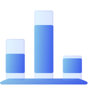
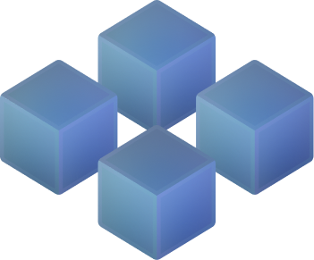

The SATI Impact
SATI marks a significant leap forward in elevating Sarawak's economy through digital innovation and an ever-advancing workforce.

Innovation-Driven Education
Engage with cutting-edge technology and curricula designed for real-world application at SATI by its global team of academic advisors.

Excellence and Integrity
Rigorous academic standards and industry partnerships ensure SATI's programs are both robust and forward-thinking.

Collaborative Learning
SATI champions open innovation, sharing knowledge and resources to drive collaborative and transparent advancements in technology.